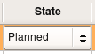
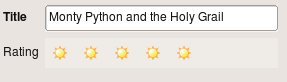

This section contains tips and tricks to build data models with Elixir/Sqlalchemy/Camelot. The reader is encouraged to first read the basics tutorial.
Camelot extends the Sqlalchemy field types with a number of its own field types. Those field types are automatically mapped to a specific delegate taking care of the visualisation.
Those field types are defined in camelot.types
The Color field returns and accepts tuples of the form (r,g,b,a) where r,g,b,a are integers between 0 and 255. The color is stored as an hexadecimal string into the database.
class MovieType(Entity):
color = Field(camelot.types.Color())
The enumeration field stores integers in the database, but represents them as strings. This allows efficient storage and querying while preserving readable code.
Typical use of this field would be a status field.
Enumeration fields are visualized as a combo box, where the labels in the combo box are the capitalized strings.
class Movie(Entity):
title = Field(Unicode(60), required=True)
state = Field(camelot.types.Enumeration([(1,'planned'), (2,'recording'), (3,'finished'), (4,'canceled')]),
index=True, required=True, default='planning')

The rating field is an integer field that is visualized as a number of stars that can be selected.
class Movie(Entity):
title = Field(Unicode(60), required=True)
rating = Field(camelot.types.Rating())

Having certain summary fields of your models filled by the database has the advantage that the heavy processing is moved from the client to the server. Moreover if the summary builds on information in related records, having the database build the summary reduces the need to transfer additional data from the database to the server.
To display fields in the table and the form view that are the result of a calculation done by the database, a ColumnProperty needs to be defined in the Elixir model. In this ColumnProperty, the sql query can be defined using sqlalchemy statements. Then use the field attributes mechanism to specify which delegate needs to be used to render the field.

As an example we will create a budget with multiple budget lines, where the total budget is calculated by the database :
from elixir.properties import ColumnProperty
from camelot.view.controls import delegates
from sqlalchemy import sql, and_
class Budget(Entity):
lines = OneToMany('BudgetLine')
total = ColumnProperty(lambda c:sql.select([sql.func.sum(BudgetLine.amount)], and_(BudgetLine.budget_id==Budget.id)))
class Admin(EntityAdmin):
name = 'Budgets'
list_display = [ 'total', 'lines']
field_attributes = {'total':{'delegate':delegates.FloatColumnDelegate}}
class BudgetLine(Entity):
budget = ManyToOne('Budget', required=True, ondelete='cascade', onupdate='cascade')
amount = Field(Float(precision=2), default=0)
class Admin(EntityAdmin):
name = 'Budget lines'
list_display = ['amount',]
When the user presses F9, all data in the application is refreshed from the database, and thus all fields are recalculated.
An explanation of the lambda function inside the ColumnProperty can be found in the Elixir api and the sqlalchemy documentation.